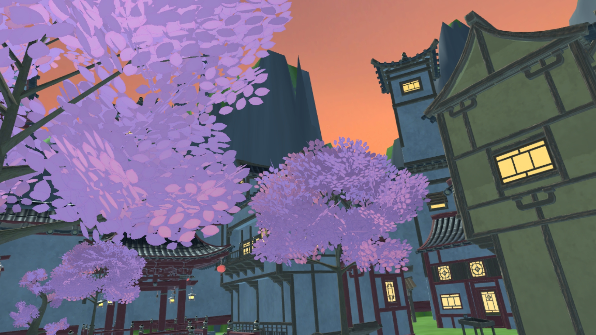
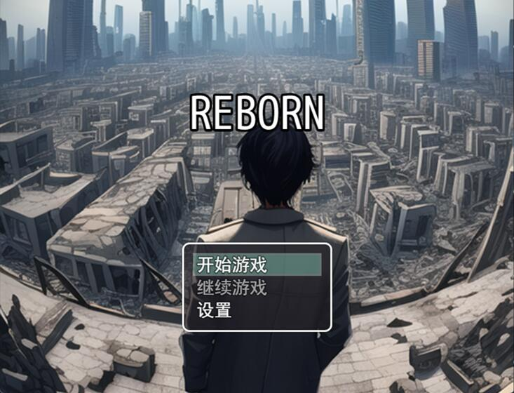
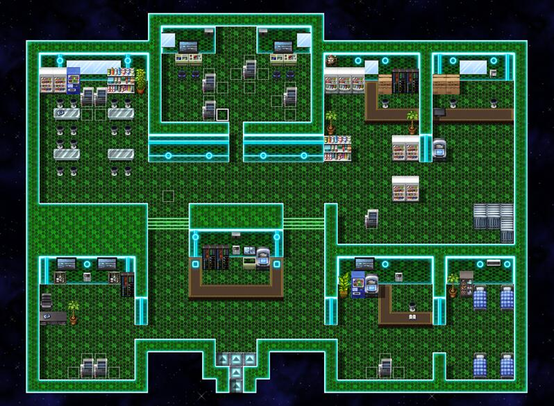

晷枢双界
VR游戏
下载链接：https://pan.baidu.com/s/13K01ShJFkVY_qt-vLBZxYw?pwd=f3f4
2025-5-20


游戏原声带OST
REBORN
2024腾讯gamejam参赛作品 最佳叙事奖
下载链接：https://pan.baidu.com/s/1U7zXOhj8M6a3jmKk08DzEA?pwd=ypf5
2024-12-2
まだ作品がありません～
现在还没有其他作品展示呢，京花ちゃん正在努力创作中，敬请期待哦！(´･ω･｀)